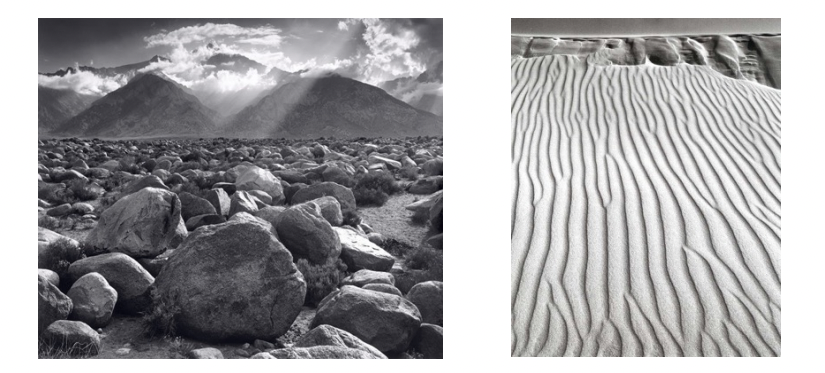
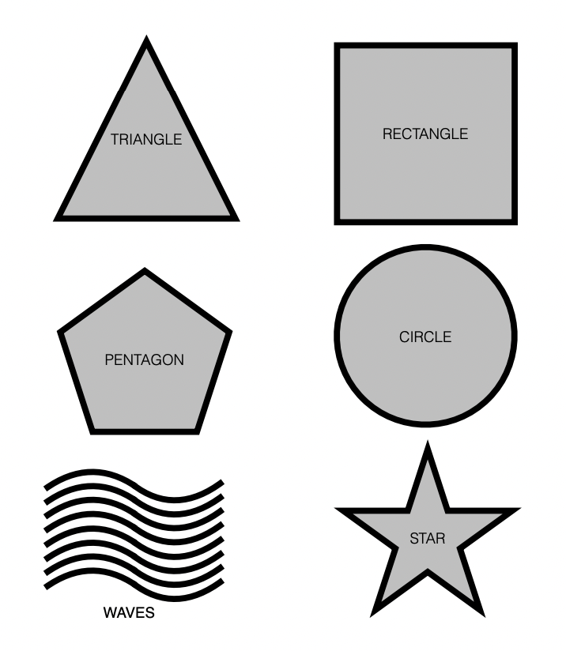
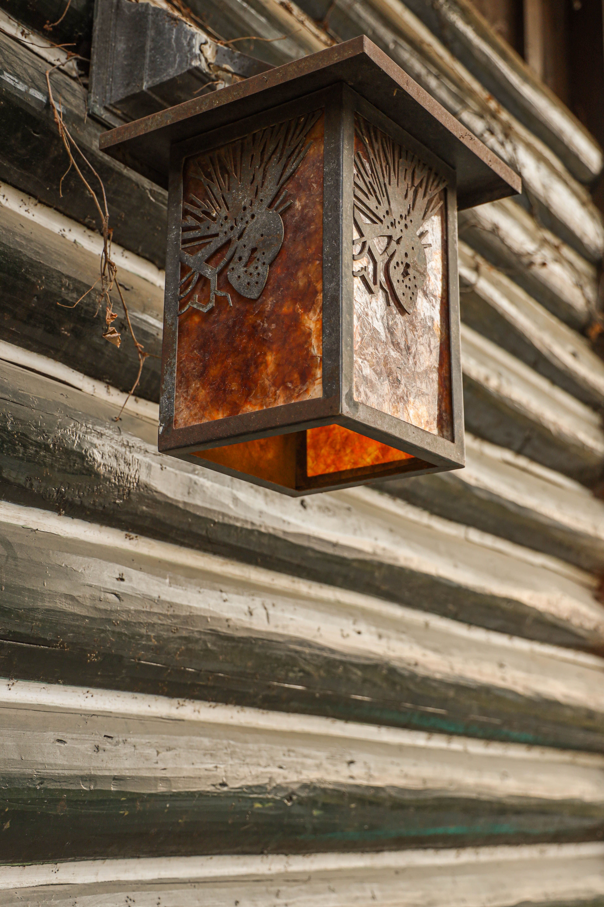
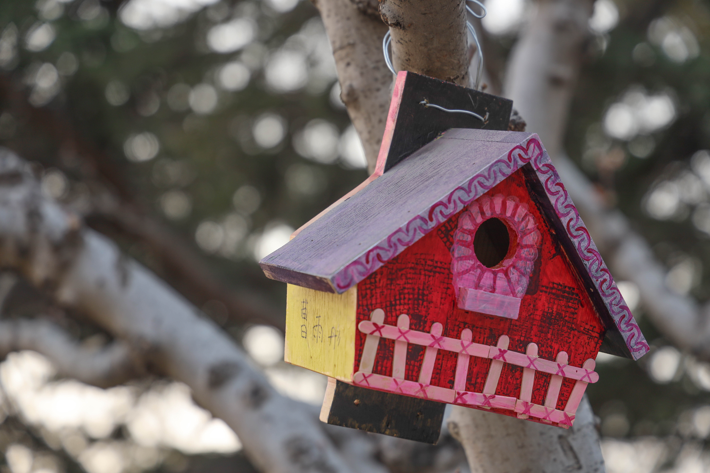
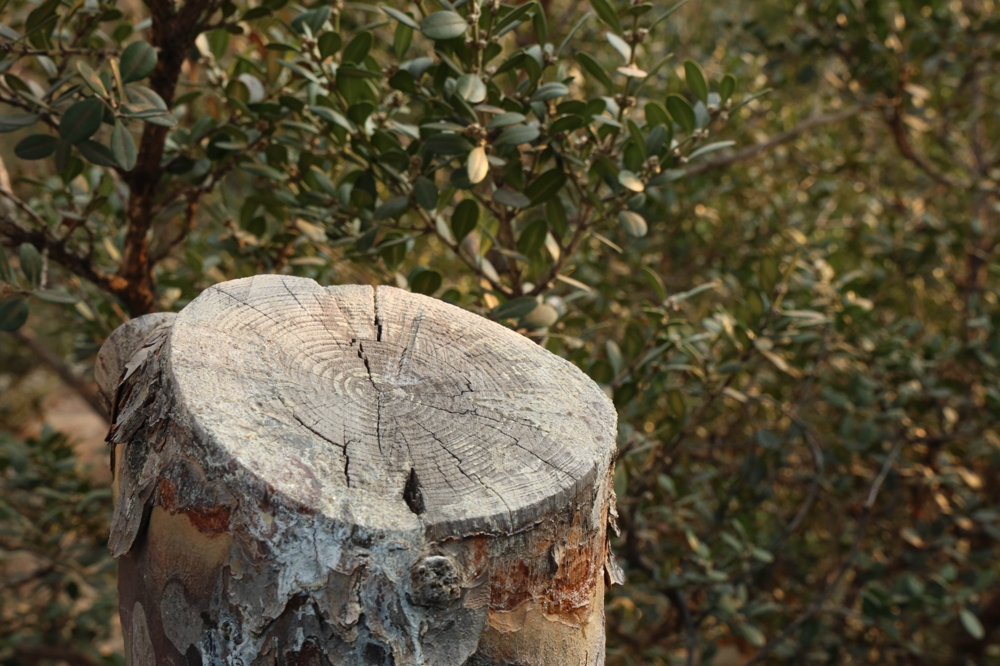
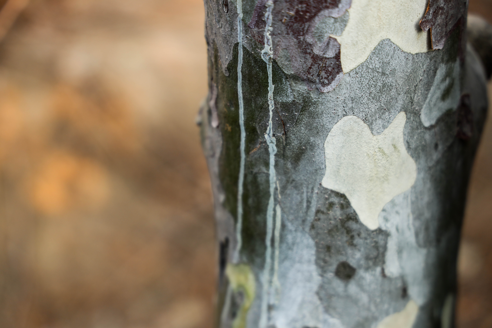

Project 1: Keep an I[SO] Out
注：本来只想记录一下项目结果，但读完项目的说明觉得内容写得很好，收益良多，就顺便翻译一下其中的内容。直接看原文请移步这里。
正文
其实，有趣的事物就在我们周围。随着时间推移，我们逐渐把生活的环境看作理所当然，忽略其中的细节，如果你恰好是一位摄影师，这种习惯可能阻止我们捕捉美好的瞬间。如果摄影师不能发现场景中的美，那么他该如何用相机捕捉它？
本项目的目的是让你探求日常生活中的美。为此，我们在本文文末准备了一组形状。在项目到期前，你的目标是为每个形状提交一张照片，后者要能够清晰地表现这个形状。注意，这里的目的不是直接找到一个某形状的物体就直接按下快门，而是找到隐藏在你身边场景中的形状，用相机把它找出来。
你可以使用生活中常见的物品、建筑、色彩以及其它任何事物，可以即时取景也可以等待场景出现，但不论采用哪种方式，请关注细节。你可以使用许多摄影技巧将特定形状从环境中抽离出来，比如色彩、负空间 (negative space)、正空间 (positive space)、放大、裁剪、旋转、特殊角度 (如仰角、俯角)、纹理等等。
在本项目中，达到完美的曝光不是最重要的，因为我们还未介绍完曝光相关的知识点，以及曝光对照片的影响，因此作业评判会在曝光方面留下余地。然而，曝光是照片的基础之一，一张表现力好的照片曝光也一定不差，因此你需要确保场景中有足够的光帮助你减小噪点、颗粒以及模糊程度。另外注意尽量避免高对比度：正午的阳光容易产生很强的阴影和光比，日出和日落时分，自然光将变得柔和、色彩将变得更丰富，但最佳拍摄时间窗口相对较短，请提前制定行程计划。如果要使用人造光源，可以通过墙的反射将光线变柔和。
在第一次尝试就获得完美的结果是小概率事件。当你尝试在场景中捕捉几何图形时，需要有一次又一次审视、调整、重试甚至推倒重来的心理准备。在选择最终照片时还需抱着冷酷无情的态度。即便是专业摄影师，在捕捉场景时也需要不断重试，直到找到最佳照片为止。这个过程可能需要花费你很多时间，甚至有时候不能得到想要的结果，这对于业余摄影师来说这是稀松平常的事情。
近几个世纪，在作品中呈现几何图形存在于各种艺术形式。如果你想要获得灵感，可以看看你最喜欢的摄影作品，并在其中找到几何图形。当然，如果我们在一节严肃的摄影课中不提及 Ansel Adams，那就有点过不去了，他在许多作品中通过令人拍案叫绝的方式展现着几何图形：

上边左图题为 "Mount Williamson"，右图题为 "Dunes, Oceano, California"，尽管这些照片并不仅仅突出表现一个特定的几何图形，但我们可以思考这些几何图形如何影响着我们对图片的观感体验。甚至一些现代艺术家尝试将这种观点集成到一款 iPhone 游戏中，后者便是 Cucalu。如果你有兴趣，可以观看视频：
需要注意的是，我们对这个项目的形式预期比 Cucalu 更加严肃，相比于简单找到图形拍完即走，你必须持续地调整、优化，仅提交你最好的图片。
Geometric Shapes

我的作品
注：我会不断地做这个作业，每当遇到更好的图片就更新 : )
Triangle
2021/02/27 摄于双秀公园，玉兰的花骨朵呈三角形，所有树枝的外围恰好包成一个三角形，有种分形的感觉。
Rectangle

2021/02/27 摄于双秀公园，一个锈蚀的路灯，整体是一个长方体。
Pentagon

2021/02/27 摄于双秀公园，有很多小朋友从公益组织购买了五边形鸟笼，涂上颜色挂在树上。
Circle

2021/02/27 摄于双秀公园，有种病树前头万木春之感。树状上的年轮是北京每年的气候印记。
Waves
2021/02/27 摄于双秀公园，景观树枝的剪影，有点波浪的形状，但并不是很顺畅的波浪。
Star

2021/02/27 摄于双秀公园，梧桐树皮的着色很讲究，恰好剥落了一块星型的树皮。梧桐树干就是一个天然的画板，大自然用它的风云变化在上面作画，只要带着想象力，在上面肯定能找到惊喜。